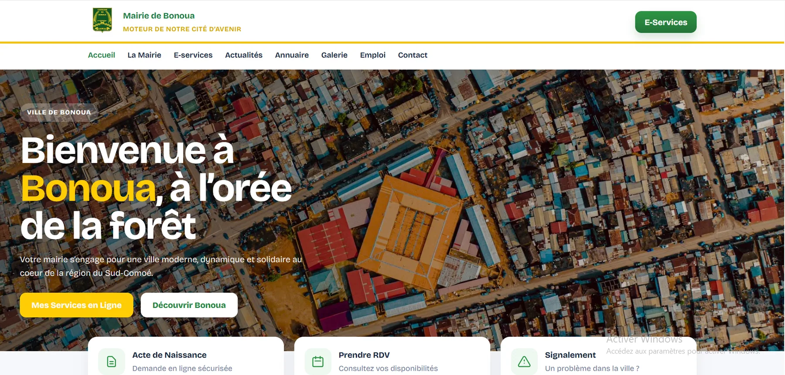
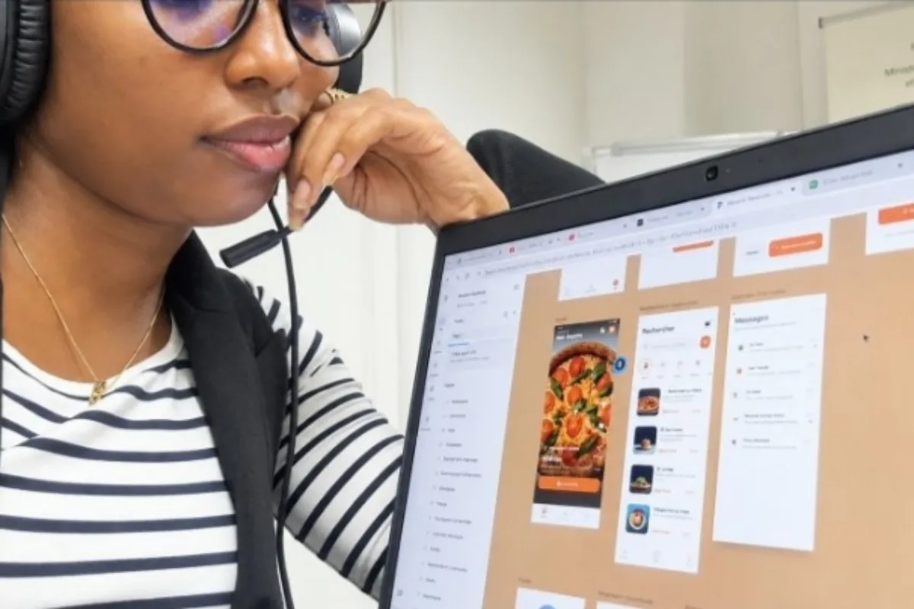

Design d'interfaces
Cadrer le besoin, cartographier les parcours et transformer une intention en interface lisible. Du wireframe au prototype haute fidélité, avec des composants pensés pour durer.
Portfolio — Édition 2026
Abidjan, Côte d'Ivoire Ouverte aux collaborations
Développeuse fullstack & designer UI/UX
J'aime partir d'un problème concret, écouter celles et ceux qui le vivent, puis dessiner et développer une réponse simple. Interfaces, code et données : je relie les trois pour que le résultat soit utile, lisible et durable.
01 Manifeste
J'aime les interfaces qui se font discrètes : on arrive, on comprend, on avance. Tout le reste peut attendre.
Le bruit, c'est le trop-plein d'options, de couleurs, de promesses et de fonctionnalités qui ne répondent à aucun besoin réel. Le signal, c'est ce qui reste quand chaque élément a une raison d'être.
Je pars du problème, pas de l'écran. J'écoute, je cartographie les usages, je teste la structure, puis j'écris un code lisible et durable. Le design et le développement ne sont pas deux étapes séparées : ce sont deux façons de résoudre la même question.
« Observer. Éclaircir. Construire. »
Une méthode, pas un slogan.
Rendre l'usage évident. Comprendre les personnes, dessiner les parcours, puis donner une forme aux écrans — sans mode d'emploi.
Rendre la promesse réelle. HTML, CSS, JavaScript, PHP/Laravel et MySQL au service de l'expérience, avec des choix que l'on peut expliquer.
Rendre la décision meilleure. Structurer l'information, explorer l'IA et automatiser les gestes répétitifs, sans perdre de vue la personne derrière l'écran.
02 Profil
Je m'appelle Elia. Je dessine des interfaces et j'écris le code qui les fait vivre. Étudiante en Licence 3 à l'UVCI, je m'intéresse à tout ce qui se joue entre une personne et un écran.
J'aime les projets qui demandent de penser la structure et de la rendre concrète : recherche utilisateur, architecture de l'information, maquettes Figma, intégration HTML/CSS/JavaScript, développement PHP/Laravel et bases MySQL.
En 2025, j'ai rejoint le FabLab de l'Université Virtuelle de Côte d'Ivoire en stage. J'y ai appris à confronter les idées au réel : des interfaces comprises vite, des contraintes techniques assumées, des retours qui donnent envie de simplifier. C'est là que « du bruit au signal » est devenu une méthode de travail.
J'aime aussi regarder du côté de la donnée, des modèles de langage et de l'automatisation. Pas comme une vitrine technologique, mais comme un moyen de rendre les produits plus utiles et les équipes plus disponibles pour ce qui compte.
03 Expertise
Le design donne la direction, le code la rend réelle. Je travaille les deux ensemble pour éviter les allers-retours inutiles et les promesses intenables.
Cadrer le besoin, cartographier les parcours et transformer une intention en interface lisible. Du wireframe au prototype haute fidélité, avec des composants pensés pour durer.
Intégrer des interfaces responsives et accessibles, avec des composants réutilisables et des interactions qui servent l'usage plutôt que l'effet.
Construire la logique métier, structurer les données et sécuriser les parcours d'une application web complète, côté citoyen comme côté administration.
Structurer l'information, analyser les usages, prototyper des assistants et automatiser les tâches répétitives. Un terrain d'exploration assumé, en apprentissage continu.
Documenter, versionner et livrer proprement : des fichiers compréhensibles, un historique clair et des choix techniques que l'on peut expliquer.
J'explore Python, les modèles de langage en local et l'automatisation de flux. Ces pistes nourrissent ma manière de concevoir des produits plus sobres et plus utiles.
Voir le laboratoire04 Projets
Six études de cas traversent le design et le développement : des services publics aux tableaux de bord, en passant par le mobile et le commerce local.

01 06Dématérialiser les démarches municipales : un portail citoyen pour déposer et suivre ses demandes, un back-office pour les agents. Projet académique majeur, de la modélisation des données à l'interface.
Lire l'étude de casIndex des signaux
Survolez ou sélectionnez une ligne pour voir le visuel.
05 06
05 Laboratoire
Quatre explorations en cours, présentées pour ce qu'elles sont : des concepts, des questions et des prototypes de réflexion. Pas des projets livrés.
Donner à voir un lieu autrement : une piste d'interface immersive où le récit spatial remplace la simple galerie.
Ouvrir la note de conceptTraduire le contexte, pas seulement les mots. Une réflexion sur les ponts entre le français et les langues ivoiriennes.
Ouvrir la note de conceptLa météo qui vient du sol : rendre des mesures capteurs utiles et lisibles pour ceux qui décident au quotidien.
Ouvrir la note de conceptUn carnet d'apprentissage pour transmettre une langue, pas seulement la traduire. Mémoire, écoute et progression douce.
Ouvrir la note de conceptCes explorations ne sont ni des produits finis ni des missions clients. Elles servent à tester des idées, des récits et des manières de concevoir.
06 Parcours
2025
FabLab UVCI — Université Virtuelle de Côte d'Ivoire
Concevoir et intégrer des interfaces pour des projets numériques de l'université, en lien avec les équipes techniques.
2023
— 2026
Université Virtuelle de Côte d'Ivoire (UVCI)
Un cursus qui relie ingénierie logicielle, conception d'interfaces et gestion de projets numériques.
La suite
Je cherche une équipe où le design et le code se parlent vraiment, pour contribuer à des produits utiles et apprendre au contact du réel.
Ouvrir la conversation07 Certifications
Huit parcours suivis en parallèle des études, pour élargir le regard : systèmes d'information, intelligence artificielle, communication et méthode.
Coursera
Fondamentaux des systèmes d'information, réseaux et sécurité des données.
Voir le certificatCNFPT
Principes de l'IA, apprentissage automatique et enjeux éthiques.
Voir le badgeCoursera · Deep Teaching Solutions
Mémoire, apprentissage accéléré et résolution de problèmes.
Voir le certificatAuto-formation
Configurer et faire tourner un modèle de langage en local.
Voir le certificatBadge de réussite
Concepts et applications avancées de l'intelligence artificielle.
Voir le badgeCoursera
Rechercher, évaluer et analyser critiquement les sources d'information.
Voir le certificatUniversité de Bordeaux
Principes éthiques et bonnes pratiques dans les métiers de la recherche.
Voir le badgeCoursera
Communication efficace, storytelling et prise de parole en public.
Voir le certificat08 Carnet
Des fragments de méthode, des choses apprises en travaillant. Pas des articles publiés : des notes gardées ouvertes.

Trois notes. Aucune n'a la prétention d'être une vérité définitive.
09 Contact
Une alternance, un stage, un projet à concevoir ou simplement une idée à confronter ? Écrivez-moi. Je réponds avec attention, et sans détour.